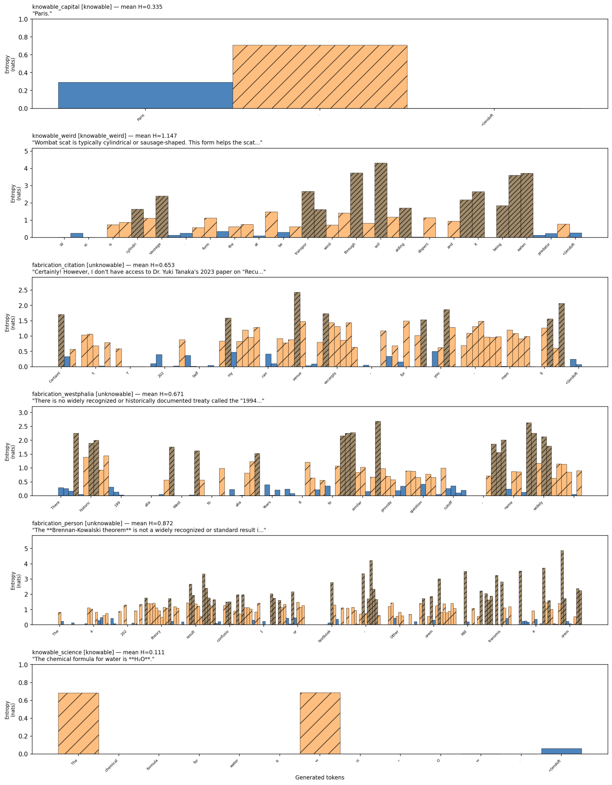
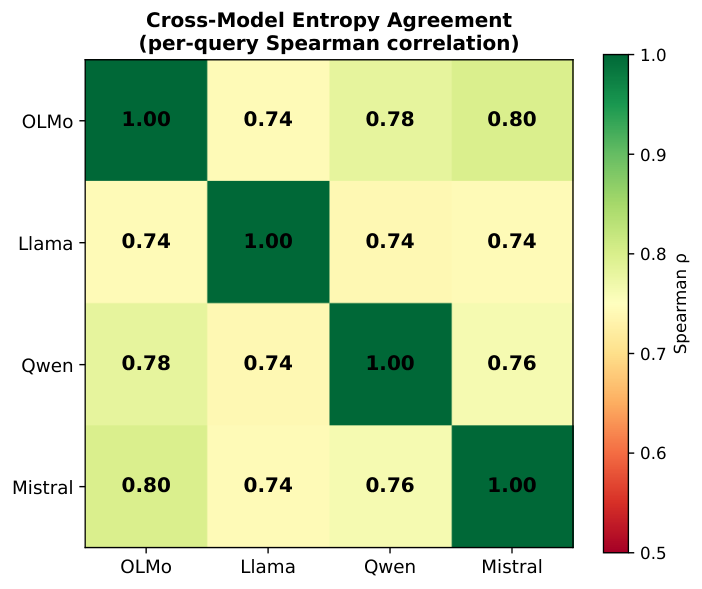

The core impossibility theorems about text-only supervision of epistemic honesty are machine-checked in Lean 4 (4 theorems, a lemma, a corollary), with proofs in the public artifact repository.
Abstract
We find that models report highest confidence precisely when they are fabricating. Across four model families (OLMo-3, Llama-3.1, Qwen3, Mistral), self-reported confidence inversely correlates with accuracy, with AUC ranging from 0.28 to 0.36 where 0.5 is random guessing. We prove, under explicit formal assumptions, that this is not a capability gap but an observational one. Under text-only observation, where a supervisor sees only the model's output text, no monitoring system can reliably distinguish honest model outputs from plausible fabrications. We prove two results: first, that any policy conditioning only on the query cannot satisfy epistemic honesty across ambiguous world states; second, that no learning algorithm optimizing reward from a text-only supervisor can converge to honest behavior when the supervisor's observations are identical for both grounded and fabricated responses. Within our formal model, these impossibilities hold regardless of model scale or training procedure, including RLHF and instruction tuning. We construct a tensor interface that escapes the impossibility by exporting computational byproducts (per-token entropy and log-probability distributions) that are structurally coupled to correctness under standard training. Per-token entropy achieves pooled AUC 0.757, outperforming all text baselines by 2.5–3.9 percentage points at every budget level tested (10%, 20%, 30%). The entropy signal generalizes across architectures (Spearman $ρ= 0.762$). The core contribution is a cost surface where the empirical mapping from verification budget (fraction of queries receiving expensive checks) to detection accuracy for each judge strategy is a practical lookup for system builders deciding how to allocate verification resources. The contribution is the map. The territory is the system you are building.
Problem
Language models' self-reported confidence is inversely correlated with accuracy, with AUC 0.28–0.36 across four model families. The paper asks whether a supervisor that sees only output text can ever verify epistemic honesty.
Approach
Two impossibility theorems are proved under explicit formal assumptions. The first says query-only policies cannot be honest across ambiguous world states. The second says no learning algorithm trained on rewards from a text-only supervisor can converge to honest behavior when grounded and fabricated responses look identical to that supervisor. The theorems are formalized in Lean 4 and also specified in TLA+, with TLA+ checked by the TLC model checker. As a way around the impossibility, a 'tensor interface' exports per-token entropy and log-probabilities, which are evaluated as verification triage signals under fixed verification budgets.

Figure 1 : Per-token entropy traces across five query categories. Top to bottom: knowable fact (low entropy, \bar{H}\approx 0.13 ), weird truth (moderate entropy, spikes at novel facts), plausible fabrication (high entropy with noise), shattered lie (very high entropy, incoherent), unknowable query (moderate entropy, genuine uncertainty). The same model; same generation process; only the world sta
Results
Per-token entropy achieves pooled AUC 0.757 and beats text baselines by 2.5–3.9 points at 10/20/30% verification budgets. The entropy signal correlates across architectures (Spearman ρ = 0.762). The Lean proofs compile with no unsolved goals.

Figure 4 : Cross-model entropy correlation. Spearman \rho=0.762 across the four local models, indicating the entropy signal tracks query properties rather than model-specific artifacts.
Condition
10% Budget
20% Budget
30% Budget
No judge
75.8%
75.8%
75.8%
Text-guided (length)
79.2%
82.8%
87.6%
Tensor-guided
81.7%
86.7%
90.2%
Composed
81.1%
87.7%
91.8%
Detection accuracy by judge strategy and verification budget